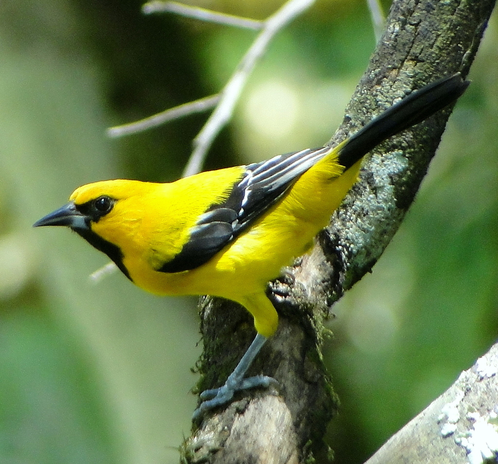

Informacion General
Cundinamarca y Boyacá son dos de los 32 departamentos que conforman la República de Colombia. Se encuentra en la region andina y algunas de sus caracteristicas generales sobre la biodiversidad en esta región son:
- {{htli1}}os ecosistemas.
- {{htli9}}
- Biodiversidad de especies: Boyaca y Cundinamarca cuenta con una amplia diversidad de especies de animales, alrededor de 72 especies entre aves, mamíferos, anfibios y resptiles habitan este territorio.
- {{htli19}}
- {{htli20}}
Algunos de las especies de animales más representativos que se pueden encontrar en esta region son:
Datos de Biodiversidad
| Departamento | Especie | Cantidad | Fecha | Imagen |
|---|---|---|---|---|
| {{ item.departamento }} | {{ item.especie }} | {{ item.cantidad }} | {{ item.fecha }} |
Cundinamarca
Cundinamarca posee una gran riqueza en recursos naturales, especialmente hídricos, por lo cual en el departamento se encuentran varias reservas naturales como parte del programa de protección ambiental. Tips de biodiversidad en Cundinamarca:

|
Conserva el páramo Sumapaz, el páramo más grande del mundo. |
| Tiene 13.136 especies entre plantas, invertebrados, vertebrados, algas, líquenes y hongos. | |

|
Posee una riqueza natural representada en un total de 2´097.332 hectáreas declaradas como áreas protegidas, algunas de carácter nacional y regional. |
| Cuenta con el 13% de ecosistemas estratégicos ambientales del país. | |
| Cuenta con cerca de 161.660 animales domésticos, que en conjunto equivalen al 44.9 % de la población domestica del departamento. |
Parque Nacional Natural Chinganza
{{htc1}} {{htc2}} {{htc3}}

Parque Nacional Natural Sumapaz
{{hts1}} {{hts2}}
Parque Aventura La Chorrera
El Parque Aventura La Chorrera se encuentra ubicado a 45 minutos de la ciudad de Bogotá, en el municipio de Choachí, sobre la Cordillera Oriental en el departamento de Cundinamarca.Su principal atractivo es la Cascada La Chorrera con una altura de 590 mts, siendo esta la más alta en caída escalonada del país, la sexta en sur América y la sesenta a nivel mundial según la World Waterfalls Database. También cuenta con otra cascada más pequeña en la que es posible realizar rappel. De igual manera se pueden realizar caminatas ecológicas que permiten la interacción con diferentes animales de granja como vacas, caballos, cabras, chivas, cerdos, perros y gatos, además de poder experimentar el trabajo del campo como el cultivo de papa, frijol, maíz, tomate, uchuva, ají y hortalizas orgánicas, entre otros. El avistamiento de aves también es posible en el Parque Aventura La Chorrera, donde se pueden encontrar diferentes especies como pavas, torcazas, tintines, copetones, azulejos, carpinteros, mochileros y colibríes. Otros animales como runchos, armadillos e incluso borugos, pueden verse en algunos lugares.


Parque Natural Chicaque
El Parque Natural Chicaque es un espacio protegido ubicado al sur occidente de la sabana de Bogotá, que cuenta con una rica e innumerable reserva ecológica e hídrica. Ubicado entre los municipios de Soacha y San Antonio del Tequendama, esta reserva natural conformada por 7 tipos de bosques, aguarda innumerables especies de flora y fauna únicas en el mundo, cuenta con más de 300 hectáreas verdes, convirtiéndose en el hogar de más de 100 especies de aves. La reserva natural está dedicada a la conservación de la naturaleza, la educación ambiental y el eco turismo. Su diversidad en aves y mamíferos lo hacen especialmente popular entre los locales. Además de la extensa área dispuesta para que los visitantes caminen y tengan un contacto con la naturaleza, este centro ecológico tiene puesto a disposición de los turistas dos zonas de camping con agua y comida, hostal, cabañas, y nidos (cabañas en los árboles) Cuenta con más de 18 km de senderos ecológicos, y servicios como restaurantes, cabalgatas, actividades de aventura como tirolesa y arborismo.

Reserva Natural El Zoque
{{htrz}}
Boyacá
Boyacá es un territorio diverso, con una amplia riqueza de flora y fauna, variedad de aves, todos los pisos térmicos, cinco cuencas hidrográficas, la mayor masa glaciar de Colombia y con un reconocimiento mundial por la producción de valiosas esmeraldas. Algunas caracteristicas de este departamentos son:
| En los páramos de Boyacá se observan especies emblemáticas de Colombia como el frailejón y el oso andino. | |

|
Cerca del 30 % de las especies de mamíferos y reptiles se encuentran en este departamento. |
|  | El municipio con mayor número de observaciones de aves migratorias es Santa María. Y cada año, alrededor de 90 especies de aves migratorias visitan este departamento. A través del SiB Colombia se han publicado 672.576 observaciones para el departamento de Boyacá. Estos datos hacen referencia a un total de 11.731 especies. |
Parque Nacional Natural Pisba
{{htpp1}} {{htpp2}}
Páramo de Ocetá
{{htpo1}}
Santuario de Fauna y Flora Iguaque
{{htri1}}
Reserva Natural La Periquera
Maravilla natural, conformada por un conjunto de caídas de agua, donde la caída principal alcanza los 18 m. Su temperatura promedio es de 18 grados. Su nombre proviene de las bandadas de pericos que habitaban la zona. Las cascadas se forman en aguas del río la Cebada a 8 Kilómetros de su nacimiento.
Parque Natural Regional Rabanal
E{{htprr1}}. {{htprr2}}
Lago de Tota
Ubicado al oriente del Departamento de Boyacá. Con una temperatura promedio de 12°C y localizado a solo 15 km al sur de la ciudad de Sogamoso. El Lago de Tota es el más grande e importante de Colombia. Playas de arena blanca que rememora al Caribe. Tota es un lugar ideal para deportes como ciclo montañismo, kayak, navegación a vela y buceo.